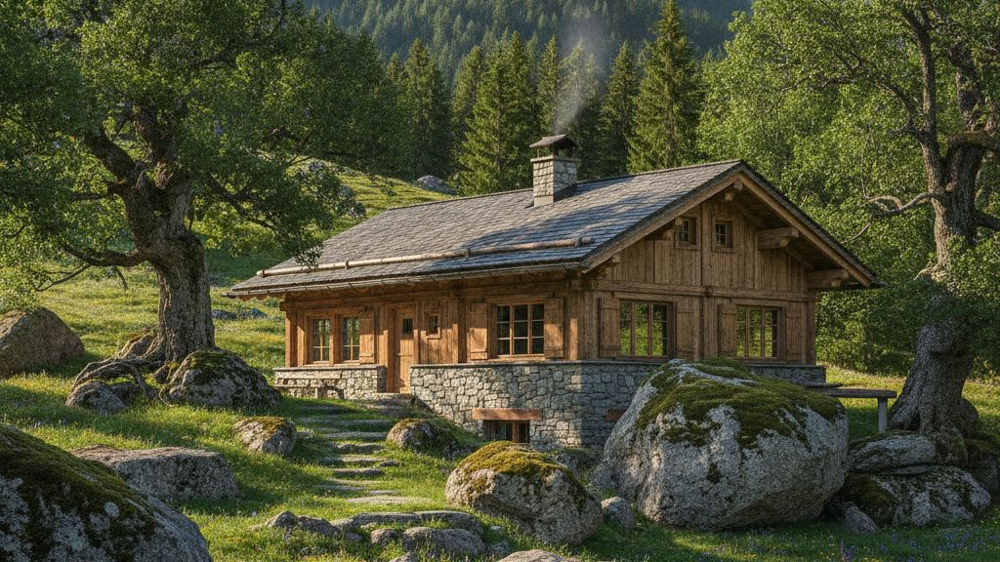
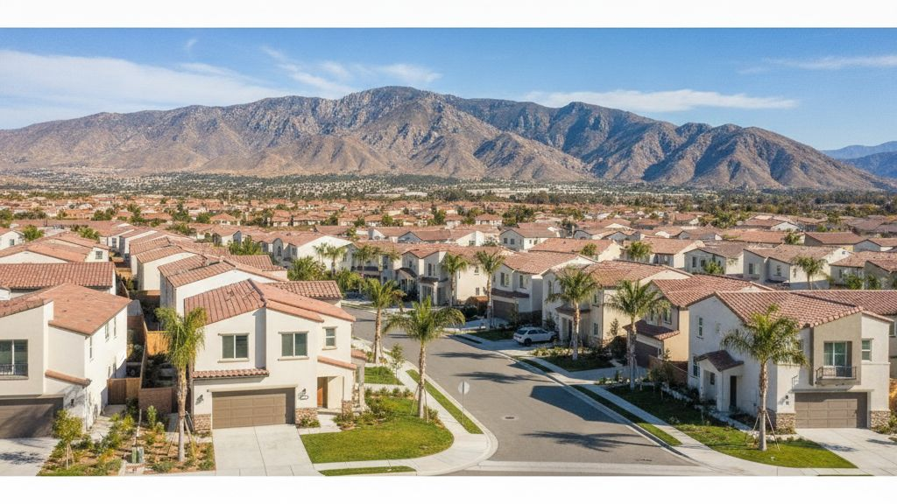

The Granite Hills Housing Market
The area is largely detached homes built from the 1960s into the 1980s, in ranch and split-level styles on lots that run from standard to generous. Some streets climb into rocky slopes, giving parcels with terraced yards and retaining walls. Condominiums and townhomes are present in small numbers, and HOAs are uncommon outside those projects. Pricing sits in the middle of the county range, a little above the denser sections of El Cajon.

What Shapes Value in Granite Hills
Granite outcrops, grading and slope affect usable yard area and construction cost, and views of the valley or hills can add value. Older roofs, panels and plumbing show up in condition reports. Comparable sales should come from the same slope or street grouping where possible.
Local Landmarks and Amenities
Granite Hills High School, Fletcher Parkway and the nearby open hills are the main local references.
Is a house with a large boulder-filled slope in back worth less than one with a flat yard?
Usable area matters, so a sloped, rocky rear lot is compared with similar properties rather than flat ones. The appraiser considers privacy, view and any retaining structures. The market response to such lots is derived from nearby sales instead of an assumed deduction.

